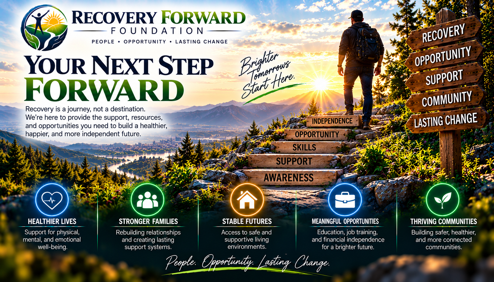
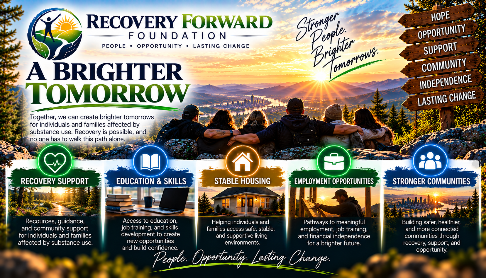

STEP 01
Start Your Application
Answer questions about your recovery journey, current needs and goals.
We do not ask for your Social Security number, home address or other unnecessary sensitive information.
BEGIN APPLICATION →RECOVERY • OPPORTUNITY • A FUTURE FORWARD
Recovery doesn't end when treatment does. We're building a path toward stability, independence and opportunity.

RECOVERY FORWARD FOUNDATION
Recovery Forward Foundation exists to help bridge the gap between completing treatment and rebuilding a stable, independent life.
DAILY STRENGTH & HOPE
May today bring strength, peace, and the courage to keep moving forward. Amen.
STEP 01
Answer questions about your recovery journey, current needs and goals.
We do not ask for your Social Security number, home address or other unnecessary sensitive information.
BEGIN APPLICATION →STEP 02
After submitting your application, you'll receive a unique Recovery Community Grant ID.
Keep this ID somewhere safe. It will be your reference for checking your application and future assistance.
CHECK STATUS
Enter your RCGI ID to check the current status of your application.
WHAT WE'RE BUILDING
Responsible financial assistance connected to meaningful recovery milestones.
Support for employment, education and the tools needed to rebuild independence.
Partnerships that connect people in recovery with resources and long-term support.

GET INVOLVED
Whether you need help with an application, want to partner with the foundation, or want to support the mission, we'd like to hear from you.
Questions about the application process, your RCGI ID, or Recovery Forward programs?
GET HELPTreatment providers, recovery organizations, businesses, employers, nonprofits, community groups, and volunteers can partner with Recovery Forward Foundation to help people build a stronger future in recovery.
BECOME A PARTNER →Your support helps Recovery Forward Foundation expand recovery assistance, strengthen programs, and give people working toward recovery a better chance to move forward.
DONATE →SUPPORT THE MISSION
Recovery Forward Foundation is building programs that support people as they work toward stability, opportunity, and long-term recovery.
Donation options are being prepared so supporters can give securely and transparently.
DONATION INFORMATION →